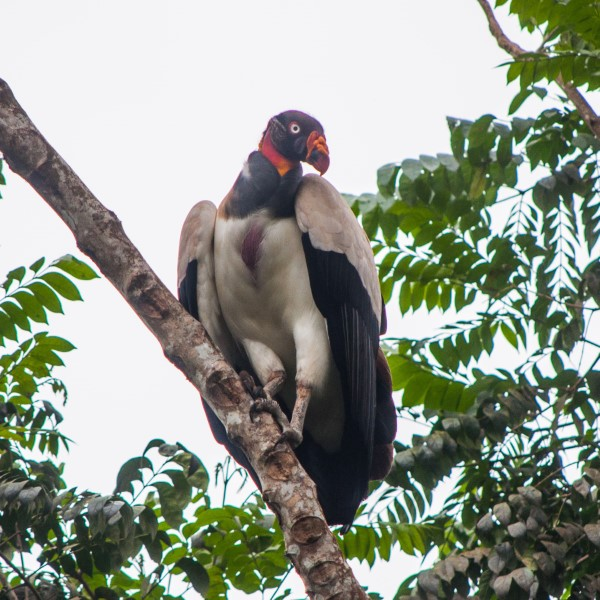
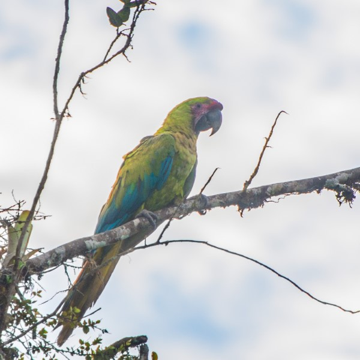
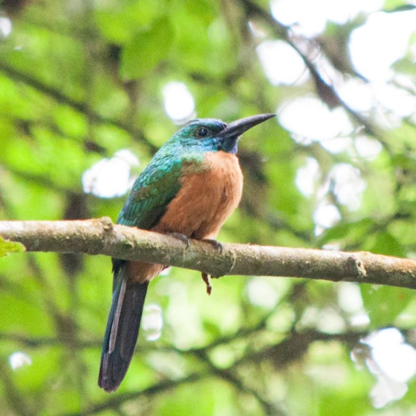
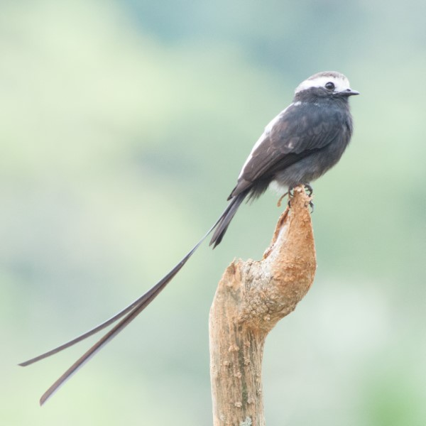
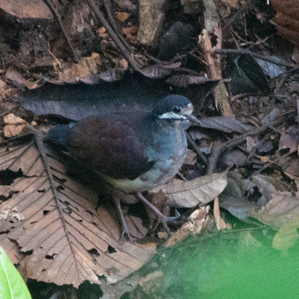
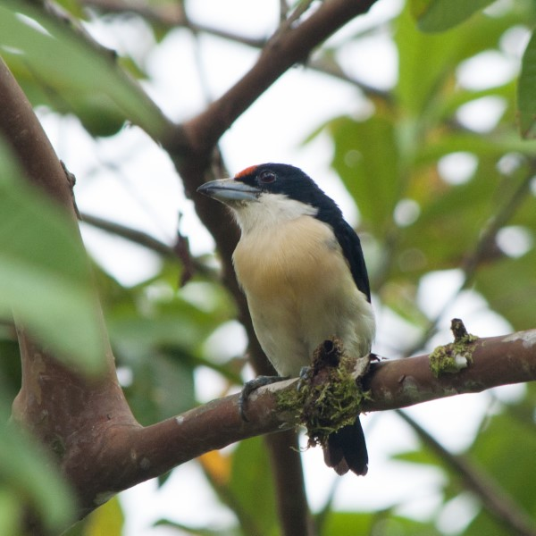
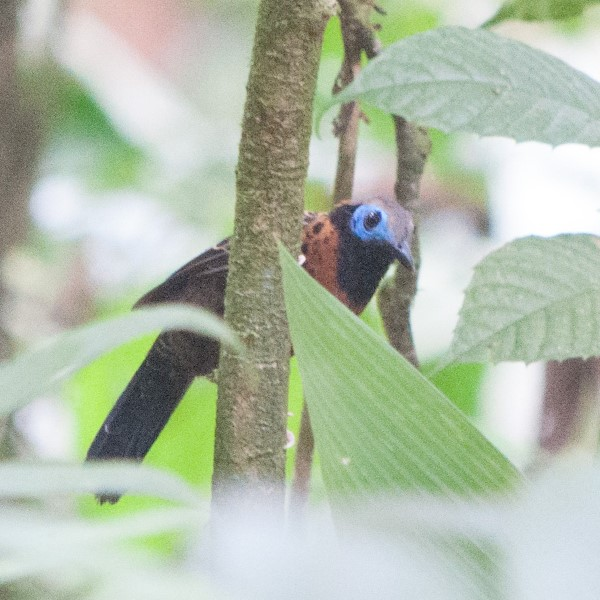
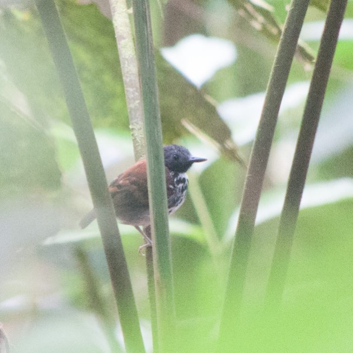
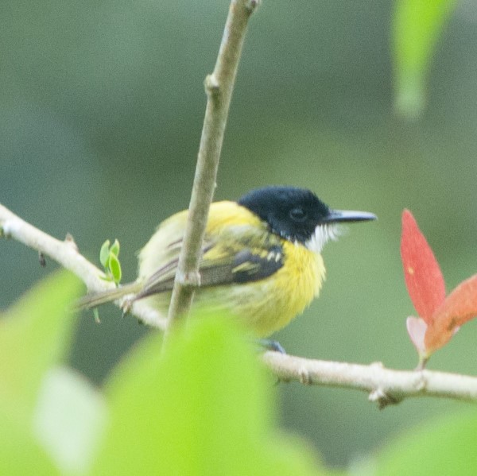
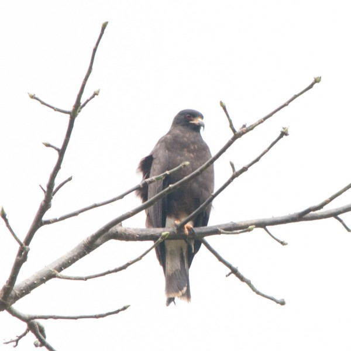

Birds of Tesoro Escondido
In November 2021 I spent 2 weeks as a volunteer at Reserva Tesoro Escondido in the Esmeraldas Province of Ecuador. Tesoro Escondido is a 2000 hectare reserve owned by the Jocotoco Foundation that protects some of the most biodiverse habitat in the world. The Choco Rainforest stretches from the southern tip of Panama to western Ecuador and while it may not be as large or as well known as the Amazon it is just as biodiverse. Unfortunately the Choco is under immense pressure from logging companies and only 2% of the primary rainforest in western Ecuador remains. Tesoro Escondido was originally created to protect the habitat of the critically endangered Brown-headed Spider-Monkey (one of the rarest primates in the world) and protects crucial habitat for and other crticially endangered species such as the Ecuadorian Great Green Macaw, the Banded Ground-Cuckoo and the Harpy Eagle.
My main responsibility at Tesoro Escondido was to conduct a bird inventory of the reserve and teach the parabiologists how to identify the species found there. Parabiologists are members of the local community with no formal training who are taught to carry out vital tasks at the reserve such as frog surveys, seed collection, primate monitoring, and reserve maintenance. Through parabiologist programs Reserves like Tesoro Escondido provide jobs for the community which leads to more land being protected and sustained for future generations. For a complete list of the birds I found at Tesoro Escondido click here.